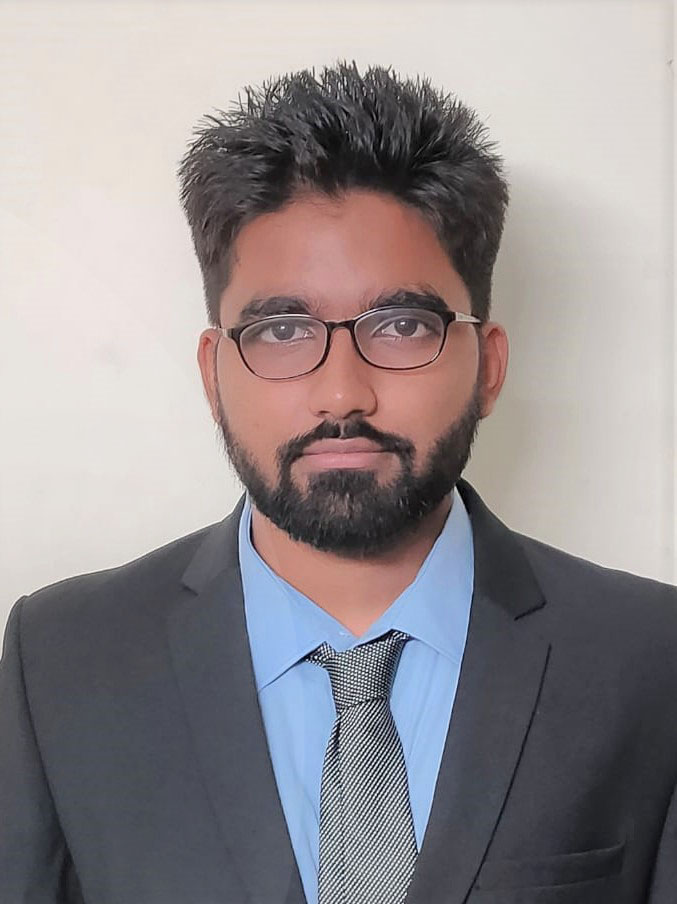

Contact: swatatabanerjee540@gmail.com
LinkedIn: https://www.linkedin.com/in/swatata-banerjee-sbrraj/
Github: https://github.com/sbrraj
|  | I am Swatata Banerjee, currently pursuing my B.Tech degree from SRM Institute of Science & Technology, KTR campus in the field of Electrical & Electronics Engineering. Basically I am belongs from a small town of West Bengal, named as Burdwan, where i have done my schooling and came to chennai to pursue my bachelor. I have done my summer internship as project trainee in NIOT(National Institute of Ocean Technology). I was the committee head of Aarussh, it's a national level tech fest where I had conducted and organize many technical events webinars. I am a people person with a natural leadership skill. I love meeting new people and learning about their lives and their background. I have eventually been promoted to a leadership role in almost every field if it’s professional or may personal because I like to help people. I can almost always find common ground with strangers, and I like making people feel comfortable in my presence. I find people usually come to me with questions or concerns even when I am not in a leadership role because if I do not know the answer, I will at least point them in the right direction. Manage clients, customer satisfaction these are major service of a company so at that moment I can handle it in a better way. My hobbies are playing chess, in my free time i love to watch news and try to learn some new skills. |
Feb 2023 - Jul 2023
Jun 2022 - Jul 2022
Apr 2022 - May 2022
Apr 2022 - Jul 2020
Jul 2019 - Aug 2019
A modified non-isolated bidirectional DC/DC converter (M-NBC) that offers high voltage conversion ratios in both boost and buck modes while also putting less voltage stress on switches. Three control switches and a capacitor were added to the existing Switched Inductor Boost Converter (SIBC) in place of four diodes, which helped to keep the total voltage output across the switches to half of the total output and provided bi-directional operation in both boost and buck modes. It offers high voltage conversion for the same amount of components while still maintaining the component count of the upgraded SIBC. When the M-NBC is in boost mode, the components are charged in parallel and discharged in series, whereas when it is in buck mode, the components are charged in series and discharged in parallel. To reduce EMI losses, a common ground is established between the source and the load
Developed a system by using an Arduino Mega board and various sensors to detect the current temperature, pressure, humidity with real date and time. Once it detects these elements, it will automatically store the information on a micro SD card or be able to upload it to the cloud. We are accustomed to using SD cards because they can be used to store data when a network outage prevents the data from being stored in the cloud. Depending on our needs, we can check the temperature and pressure based on date and time, and we can also edit the delay time.